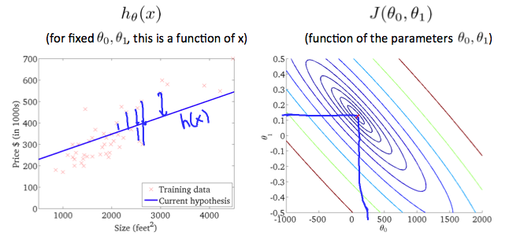

2 Week 1
2.1 What is Machine Learning?
Arthur Samuel described it as: “the field of study that gives computers the ability to learn without being explicitly programmed.” This is an older, informal definition.
Modern: Tom Mitchell (1998) defines machine learning by saying that a well-posed learning problem is defined as follows.
- Well-posed Learning Problem: A computer program is said to learn from experience E with respect to some task T and some performance measure P, if its performance on T, as measured by P, improves with experience E.
In the checkers example
- E is the experience of playing the game 10,000’s of times against itself.
- T is the task of playing checkers
- P is probability of winning the next game of checkers.
Two types of ML algorithms:
- supervised learning
- unsupervised learning.
Other types: reinforcement learning, recommended systems.
2.2 Supervised Learning
Regression problem: Where you are trying to fit a model to explain a continuous variable by using a predictor.
Classification Problem: Where you are trying to fit a model to explain a bernoulli/binomial variable by using a predictor. - When you have multiple predictors it makes sense to visualize it with the predictors and point label the outcome variable.
2.2.1 Supervised Learning (note)
In supervised learning, we are given a data set and already know what our correct output should look like, having the idea that there is a relationship between the input and the output.
Supervised learning problems are categorized into “regression” and “classification” problems. In a regression problem, we are trying to predict results within a continuous output, meaning that we are trying to map input variables to some continuous function.
In a classification problem, we are instead trying to predict results in a discrete output. In other words, we are trying to map input variables into discrete categories.
Example 1:
Given data about the size of houses on the real estate market, try to predict their price. Price as a function of size is a continuous output, so this is a regression problem.
We could turn this example into a classification problem by instead making our output about whether the house “sells for more or less than the asking price.” Here we are classifying the houses based on price into two discrete categories.
Example 2:
Regression - Given a picture of a person, we have to predict their age on the basis of the given picture
Classification - Given a patient with a tumor, we have to predict whether the tumor is malignant or benign.
2.3 Unsupervised Learning
Unsupervised learning allows us to approach problems with little or no idea what our results should look like. We can derive structure from data where we don’t necessarily know the effect of the variables.
We can derive this structure by clustering the data based on relationships among the variables in the data.
With unsupervised learning there is no feedback based on the prediction results.
Example:
Clustering: Take a collection of 1,000,000 different genes, and find a way to automatically group these genes into groups that are somehow similar or related by different variables, such as lifespan, location, roles, and so on.
Non-clustering: The “Cocktail Party Algorithm”, allows you to find structure in a chaotic environment. (i.e. identifying individual voices and music from a mesh of sounds at a cocktail party).
2.4 Model Representation
To establish notation for future use, we’ll use \(x^{i}\) to denote the “input” variables (living area in this example), also called input features, and \(y^{i}\) to denote the “output” or target variable that we are trying to predict (price). A pair (\(x^{i}\) , \(y^{i}\)) is called a training example, and the dataset that we’ll be using to learn—a list of m training examples {(\(x^{(i)}\) , \(y^{(i)}\) ); i = 1, . . . , m—is called a training set. Note that the superscript “(i)” in the notation is simply an index into the training set, and has nothing to do with exponentiation. We will also use X to denote the space of input values, and Y to denote the space of output values. In this example, X = Y = ℝ.
To describe the supervised learning problem slightly more formally, our goal is, given a training set, to learn a function h : X → Y so that h(x) is a “good” predictor for the corresponding value of y. For historical reasons, this function h is called a hypothesis. Seen pictorially, the process is therefore like this:

Model Representation
When the target variable that we’re trying to predict is continuous, such as in our housing example, we call the learning problem a regression problem. When y can take on only a small number of discrete values (such as if, given the living area, we wanted to predict if a dwelling is a house or an apartment, say), we call it a classification problem.
2.5 Cost Function
We can measure the accuracy of our hypothesis function by using a cost function. This takes an average difference (actually a fancier version of an average) of all the results of the hypothesis with inputs from x’s and the actual output y’s.
\(J(\theta_0, \theta_1) = \dfrac {1}{2m} \displaystyle \sum _{i=1}^m \left ( \hat{y}_{i}- y_{i} \right)^2 = \dfrac {1}{2m} \displaystyle \sum _{i=1}^m \left (h_\theta (x_{i}) - y_{i} \right)^2\)
To break it apart, it is \(\frac{1}{2} \bar{x}\) where \(\bar{x}\) is the mean of the squares of \(h_\theta (x_{i}) - y_{i}\), or the difference between the predicted value and the actual value.
This function is otherwise called the “Squared error function”, or “Mean squared error”. The mean is halved \(\left(\frac{1}{2}\right)\) as a convenience for the computation of the gradient descent, as the derivative term of the square function will cancel out the \(\frac{1}{2}\) term.
The following image summarizes what the cost function does:

Cost function summary
2.6 Cost Function - Intution I
If we try to think of it in visual terms, our training data set is scattered on the x-y plane. We are trying to make a straight line (defined by \(h_\theta(x)\)) which passes through these scattered data points.
Our objective is to get the best possible line. The best possible line will be such so that the average squared vertical distances of the scattered points from the line will be the least. Ideally, the line should pass through all the points of our training data set. In such a case, the value of \(J(\theta_0, \theta_1)\) will be 0. The following example shows the ideal situation where we have a cost function of 0.

Zero cost function
When \(\theta_1 = 1\), we get a slope of 1 which goes through every single data point in our model. Conversely, when \(\theta_1 = 0.5\), we see the vertical distance from our fit to the data points increase.

0.5 \(\theta\)
This increases our cost function to 0.58. Plotting several other points yields to the following graph:

Cost Function Graph for different values of \(\theta\)
Thus as a goal, we should try to minimize the cost function. In this case, \(\theta_1 = 1\) is our global minimum.
2.7 Cost Function - Intution II
A contour plot is a graph that contains many contour lines. A contour line of a two variable function has a constant value at all points of the same line. An example of such a graph is the one to the right below.

Contour Plot - iso things in microeconomics
Taking any color and going along the ‘circle’, one would expect to get the same value of the cost function. For example, the three green points found on the green line above have the same value for \(J(\theta_0,\theta_1)\) and as a result, they are found along the same line. The circled x displays the value of the cost function for the graph on the left when \(\theta_0 = 800\) and \(\theta_1 = -0.15\). Taking another h(x) and plotting its contour plot, one gets the following graphs:

When \(\theta_0 = 360\) and \(\theta_1 = 0\), the value of \(J(\theta_0,\theta_1)\) in the contour plot gets closer to the center thus reducing the cost function error. Now giving our hypothesis function a slightly positive slope results in a better fit of the data.

The graph above minimizes the cost function as much as possible and consequently, the result of \(\theta_1\) and \(\theta_0\) tend to be around 0.12 and 250 respectively. Plotting those values on our graph to the right seems to put our point in the center of the inner most ‘circle’.
2.8 Gradient Descent
So we have our hypothesis function and we have a way of measuring how well it fits into the data. Now we need to estimate the parameters in the hypothesis function. That’s where gradient descent comes in.
Imagine that we graph our hypothesis function based on its fields \(\theta_0\) and \(\theta_1\) (actually we are graphing the cost function as a function of the parameter estimates). We are not graphing x and y itself, but the parameter range of our hypothesis function and the cost resulting from selecting a particular set of parameters.
We put \(\theta_0\) on the x axis and \(\theta_1\) on the y axis, with the cost function on the vertical z axis. The points on our graph will be the result of the cost function using our hypothesis with those specific theta parameters. The graph below depicts such a setup.

We will know that we have succeeded when our cost function is at the very bottom of the pits in our graph, i.e. when its value is the minimum. The red arrows show the minimum points in the graph.
The way we do this is by taking the derivative (the tangential line to a function) of our cost function. The slope of the tangent is the derivative at that point and it will give us a direction to move towards. We make steps down the cost function in the direction with the steepest descent. The size of each step is determined by the parameter α, which is called the learning rate.
For example, the distance between each ‘star’ in the graph above represents a step determined by our parameter α. A smaller α would result in a smaller step and a larger α results in a larger step. The direction in which the step is taken is determined by the partial derivative of \(J(\theta_0,\theta_1)\). Depending on where one starts on the graph, one could end up at different points. The image above shows us two different starting points that end up in two different places.
The gradient descent algorithm is:
repeat until convergence:
\(\theta_j := \theta_j - \alpha \frac{\partial}{\partial \theta_j} J(\theta_0, \theta_1)\)
where
j=0,1 represents the feature index number. (In Econometrics this is just the \(\beta_0\) and \(\beta_1\) here intercept and the slop for the first explanatory variable)
At each iteration j, one should simultaneously update the parameters \(\theta_1, \theta_2,...,\theta_n\). Updating a specific parameter prior to calculating another one on the \(j^{(th)}\) iteration would yield to a wrong implementation.

2.9 Gradient Descent Intution
In this video we explored the scenario where we used one parameter \(\theta_1\) and plotted its cost function to implement a gradient descent. Our formula for a single parameter was :
Repeat until convergence:
\(\theta_1:=\theta_1-\alpha \frac{d}{d\theta_1} J(\theta_1)\)
Regardless of the slope’s sign for \(\frac{d}{d\theta_1} J(\theta_1)\), \(\theta_1\) eventually converges to its minimum value. The following graph shows that when the slope is negative, the value of \(\theta_1\) increases and when it is positive, the value of \(\theta_1\) decreases.

On a side note, we should adjust our parameter \(\alpha\) to ensure that the gradient descent algorithm converges in a reasonable time. Failure to converge or too much time to obtain the minimum value imply that our step size is wrong.

How does gradient descent converge with a fixed step size \(\alpha\)? The intuition behind the convergence is that \(\frac{d}{d\theta_1} J(\theta_1)\) approaches 0 as we approach the bottom of our convex function. At the minimum, the derivative will always be 0 and thus we get:
\(\theta_1:=\theta_1-\alpha * 0\)

2.10 Gradient Descent for Linear Regression
When specifically applied to the case of linear regression, a new form of the gradient descent equation can be derived. We can substitute our actual cost function and our actual hypothesis function and modify the equation to :
\[\begin{align} \text{repeat until convergence: } \lbrace & \newline \theta_0 := & \theta_0 - \alpha \frac{1}{m} \sum\limits_{i=1}^{m}(h_\theta(x_{i}) - y_{i}) \newline \theta_1 := & \theta_1 - \alpha \frac{1}{m} \sum\limits_{i=1}^{m}\left((h_\theta(x_{i}) - y_{i}) x_{i}\right) \newline \rbrace& \end{align}\]
where m is the size of the training set, \(\theta_0\) a constant that will be changing simultaneously with \(\theta_1\) and \(x_{i}, y_{i}\) are values of the given training set (data).
Note that we have separated out the two cases for \(\theta_j\) into separate equations for \(\theta_0\) and \(\theta_1\); and that for \(\theta_1\) we are multiplying \(x_{i}\) at the end due to the derivative.
The following is a derivation of \(\frac {\partial}{\partial \theta_j}J(\theta)\) for a single example :
This would be a derivation of the loss function with respect to \(\beta\) for regression through the origin with one predictor
The point of all this is that if we start with a guess for our hypothesis and then repeatedly apply these gradient descent equations, our hypothesis will become more and more accurate.
So, this is simply gradient descent on the original cost function J. This method looks at every example in the entire training set on every step, and is called batch gradient descent. Note that, while gradient descent can be susceptible to local minima in general, the optimization problem we have posed here for linear regression has only one global, and no other local, optima; thus gradient descent always converges (assuming the learning rate α is not too large) to the global minimum. Indeed, J is a convex quadratic function. Here is an example of gradient descent as it is run to minimize a quadratic function.

The ellipses shown above are the contours of a quadratic function. Also shown is the trajectory taken by gradient descent, which was initialized at (48,30). The x’s in the figure (joined by straight lines) mark the successive values of θ that gradient descent went through as it converged to its minimum.
2.10.0.1 Additonal self note
Actually, if you replace \(\\h_\theta (x_i)\) with \(\theta_0 + \theta_1*X_i\), in the cost function then you can derive the partial derivative yourself and you will get the same results. Plus the multivariate gradient descent should come as a normal extension of what is done here. Essentially, you are holding all explanatory variables constant then mapping the slope of one explanatory variable or the intercept against the cost function. Finding the slop and adjusting the value depending on this slope and also doing all this simultaneously of course.
\(J(\theta_0, \theta_1) = \dfrac {1}{2m} \displaystyle \sum _{i=1}^m \left ( \hat{y}_{i}- y_{i} \right)^2 = \dfrac {1}{2m} \displaystyle \sum _{i=1}^m \left (h_\theta (x_{i}) - y_{i} \right)^2\)
\(J(\theta_0, \theta_1) = \dfrac {1}{2m} \displaystyle \sum _{i=1}^m \left (h_\theta (x_{i}) - y_{i} \right)^2\)
\(J(\theta_0, \theta_1) = \dfrac {1}{2m} \displaystyle \sum _{i=1}^m \left ((\theta_0 + \theta_1*X_i) - y_{i} \right)^2\)
i.e partial derivative of the last equation with respect to \(\theta_0\) and \(\theta_1\).
2.11 Matrices and Vectors
Matrices are 2-dimensional arrays:
\(\begin{bmatrix} a & b & c \newline d & e & f \newline g & h & i \newline j & k & l\end{bmatrix}\)
The above matrix has four rows and three columns, so it is a 4 x 3 matrix.
A vector is a matrix with one column and many rows:
\(\begin{bmatrix} w \newline x \newline y \newline z \end{bmatrix}\)
So vectors are a subset of matrices. The above vector is a 4 x 1 matrix.
Notation and terms:
- \(A_{ij}\) refers to the element in the ith row and jth column of matrix A.
- A vector with ‘n’ rows is referred to as an ‘n’-dimensional vector.
- \(v_i\) refers to the element in the ith row of the vector.
- In general, all our vectors and matrices will be 1-indexed. Note that for some programming languages, the arrays are 0-indexed.
- Matrices are usually denoted by uppercase names while vectors are lowercase.
- “Scalar” means that an object is a single value, not a vector or matrix.
- \(\mathbb{R}\) refers to the set of scalar real numbers.
- \(\mathbb{R^n}\) refers to the set of n-dimensional vectors of real numbers.
Run the cell below to get familiar with the commands in Octave/Matlab. Feel free to create matrices and vectors and try out different things.
% The ; denotes we are going back to a new row.
A = [1, 2, 3; 4, 5, 6; 7, 8, 9; 10, 11, 12]
% Initialize a vector
v = [1;2;3]
% Get the dimension of the matrix A where m = rows and n = columns
[m,n] = size(A)
% You could also store it this way
dim_A = size(A)
% Get the dimension of the vector v
dim_v = size(v)
% Now let's index into the 2nd row 3rd column of matrix A
A_23 = A(2,3)## A =
##
## 1 2 3
## 4 5 6
## 7 8 9
## 10 11 12
##
## v =
##
## 1
## 2
## 3
##
## m = 4
## n = 3
## dim_A =
##
## 4 3
##
## dim_v =
##
## 3 1
##
## A_23 = 62.12 Addition and Scalar Multiplication
Addition and subtraction are element-wise, so you simply add or subtract each corresponding element:
\(\begin{bmatrix} a & b \newline c & d \newline \end{bmatrix} +\begin{bmatrix} w & x \newline y & z \newline \end{bmatrix} =\begin{bmatrix} a+w & b+x \newline c+y & d+z \newline \end{bmatrix}\)
Subtracting Matrices:
\(\begin{bmatrix} a & b \newline c & d \newline \end{bmatrix} - \begin{bmatrix} w & x \newline y & z \newline \end{bmatrix} =\begin{bmatrix} a-w & b-x \newline c-y & d-z \newline \end{bmatrix}\)
To add or subtract two matrices, their dimensions must be the same.
In scalar multiplication, we simply multiply every element by the scalar value:
\(\begin{bmatrix} a & b \newline c & d \newline \end{bmatrix} * x =\begin{bmatrix} a*x & b*x \newline c*x & d*x \newline \end{bmatrix}\)
In scalar division, we simply divide every element by the scalar value:
\(\begin{bmatrix} a & b \newline c & d \newline \end{bmatrix} / x =\begin{bmatrix} a /x & b/x \newline c /x & d /x \newline \end{bmatrix}\)
Experiment below with the Octave/Matlab commands for matrix addition and scalar multiplication. Feel free to try out different commands. Try to write out your answers for each command before running the cell below.
% Initialize matrix A and B
A = [1, 2, 4; 5, 3, 2]
B = [1, 3, 4; 1, 1, 1]
% Initialize constant s
s = 2
% See how element-wise addition works
add_AB = A + B
% See how element-wise subtraction works
sub_AB = A - B
% See how scalar multiplication works
mult_As = A * s
% Divide A by s
div_As = A / s
% What happens if we have a Matrix + scalar?
add_As = A + s## A =
##
## 1 2 4
## 5 3 2
##
## B =
##
## 1 3 4
## 1 1 1
##
## s = 2
## add_AB =
##
## 2 5 8
## 6 4 3
##
## sub_AB =
##
## 0 -1 0
## 4 2 1
##
## mult_As =
##
## 2 4 8
## 10 6 4
##
## div_As =
##
## 0.50000 1.00000 2.00000
## 2.50000 1.50000 1.00000
##
## add_As =
##
## 3 4 6
## 7 5 42.13 Matrix-Vector Multiplication
We map the column of the vector onto each row of the matrix, multiplying each element and summing the result.
\(\begin{bmatrix} a & b \newline c & d \newline e & f \end{bmatrix} *\begin{bmatrix} x \newline y \newline \end{bmatrix} =\begin{bmatrix} a*x + b*y \newline c*x + d*y \newline e*x + f*y\end{bmatrix}\)
The result is a vector. The number of columns of the matrix must equal the number of rows of the vector.
An m x n matrix multiplied by an n x 1 vector results in an m x 1 vector.
Below is an example of a matrix-vector multiplication. Make sure you understand how the multiplication works. Feel free to try different matrix-vector multiplications.
% Initialize matrix A
A = [1, 2, 3; 4, 5, 6;7, 8, 9]
% Initialize vector v
v = [1; 1; 1]
% Multiply A * v
Av = A * v## A =
##
## 1 2 3
## 4 5 6
## 7 8 9
##
## v =
##
## 1
## 1
## 1
##
## Av =
##
## 6
## 15
## 242.14 Matrix-Matrix Multiplication
We multiply two matrices by breaking it into several vector multiplications and concatenating the result.
\(\begin{bmatrix} a & b \newline c & d \newline e & f \end{bmatrix} *\begin{bmatrix} w & x \newline y & z \newline \end{bmatrix} =\begin{bmatrix} a*w + b*y & a*x + b*z \newline c*w + d*y & c*x + d*z \newline e*w + f*y & e*x + f*z\end{bmatrix}\)
An m x n matrix multiplied by an n x o matrix results in an m x o matrix. In the above example, a 3 x 2 matrix times a 2 x 2 matrix resulted in a 3 x 2 matrix.
To multiply two matrices, the number of columns of the first matrix must equal the number of rows of the second matrix.
For example:
% Initialize a 3 by 2 matrix
A = [1, 2; 3, 4;5, 6]
% Initialize a 2 by 1 matrix
B = [1; 2]
% We expect a resulting matrix of (3 by 2)*(2 by 1) = (3 by 1)
mult_AB = A*B
% Make sure you understand why we got that result## A =
##
## 1 2
## 3 4
## 5 6
##
## B =
##
## 1
## 2
##
## mult_AB =
##
## 5
## 11
## 172.15 Matrix Multiplication Properties
- Matrices are not commutative: \(A∗B \neq B∗A\)
- Matrices are associative: \((A∗B)∗C = A∗(B∗C)\)
The identity matrix, when multiplied by any matrix of the same dimensions, results in the original matrix. It’s just like multiplying numbers by 1. The identity matrix simply has 1’s on the diagonal (upper left to lower right diagonal) and 0’s elsewhere.
\(\begin{bmatrix} 1 & 0 & 0 \newline 0 & 1 & 0 \newline 0 & 0 & 1 \newline \end{bmatrix}\)
When multiplying the identity matrix after some matrix (A∗I), the square identity matrix’s dimension should match the other matrix’s columns. When multiplying the identity matrix before some other matrix (I∗A), the square identity matrix’s dimension should match the other matrix’s rows.
% Initialize random matrices A and B
A = [1,2;4,5]
B = [1,1;0,2]
% Initialize a 2 by 2 identity matrix
I = eye(2)
% The above notation is the same as I = [1,0;0,1]
% What happens when we multiply I*A ?
IA = I*A
% How about A*I ?
AI = A*I
% Compute A*B
AB = A*B
% Is it equal to B*A?
BA = B*A
% Note that IA = AI but AB != BA## A =
##
## 1 2
## 4 5
##
## B =
##
## 1 1
## 0 2
##
## I =
##
## Diagonal Matrix
##
## 1 0
## 0 1
##
## IA =
##
## 1 2
## 4 5
##
## AI =
##
## 1 2
## 4 5
##
## AB =
##
## 1 5
## 4 14
##
## BA =
##
## 5 7
## 8 102.16 Inverse and Transpose
The inverse of a matrix A is denoted \(A^{-1}\). Multiplying by the inverse results in the identity matrix.
A non square matrix does not have an inverse matrix. We can compute inverses of matrices in octave with the \(pinv(A)\) function and in Matlab with the \(inv(A)\) function. Matrices that don’t have an inverse are singular or degenerate.
The transposition of a matrix is like rotating the matrix 90° in clockwise direction and then reversing it. We can compute transposition of matrices in matlab with the transpose(A) function or A’:
\(A = \begin{bmatrix} a & b \newline c & d \newline e & f \end{bmatrix}\)
\(A^T = \begin{bmatrix} a & c & e \newline b & d & f \newline \end{bmatrix}\)
In other words:
\(A_{ij} = A^T_{ji}\)
% Initialize matrix A
A = [1,2,0;0,5,6;7,0,9]
% Transpose A
A_trans = A'
% Take the inverse of A
A_inv = inv(A)
% What is A^(-1)*A?
A_invA = inv(A)*A## A =
##
## 1 2 0
## 0 5 6
## 7 0 9
##
## A_trans =
##
## 1 0 7
## 2 5 0
## 0 6 9
##
## A_inv =
##
## 0.348837 -0.139535 0.093023
## 0.325581 0.069767 -0.046512
## -0.271318 0.108527 0.038760
##
## A_invA =
##
## 1.0000e+00 -8.3267e-17 5.5511e-17
## 2.7756e-17 1.0000e+00 -8.3267e-17
## -3.4694e-17 2.7756e-17 1.0000e+00